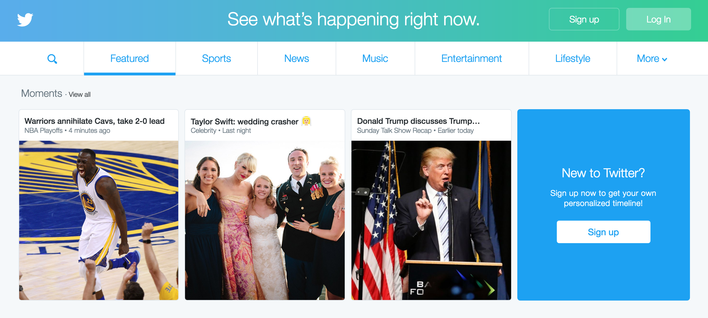
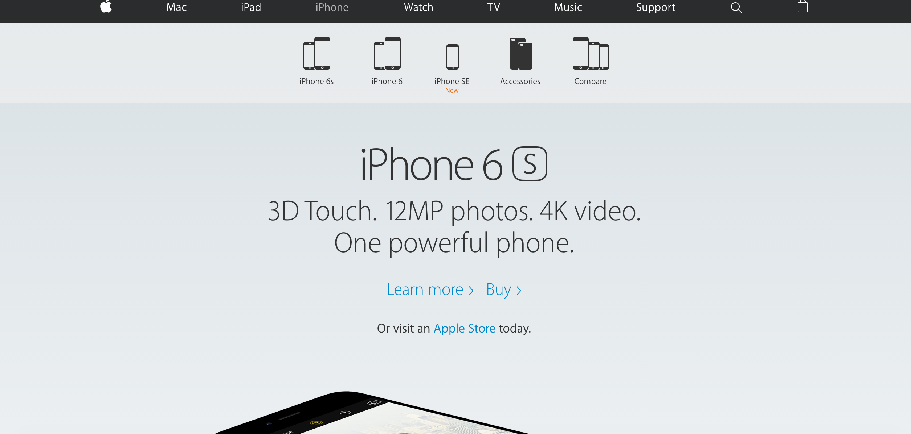
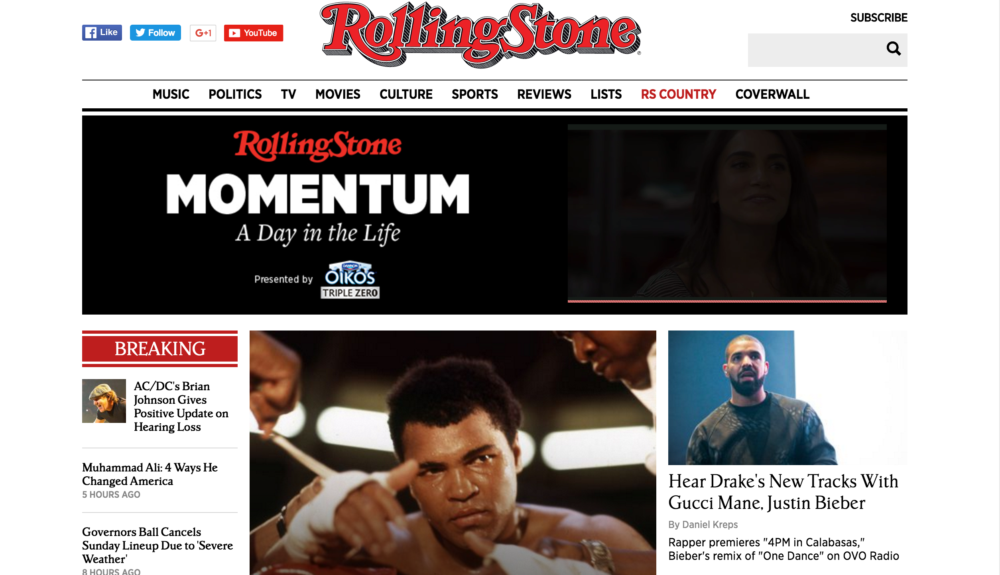
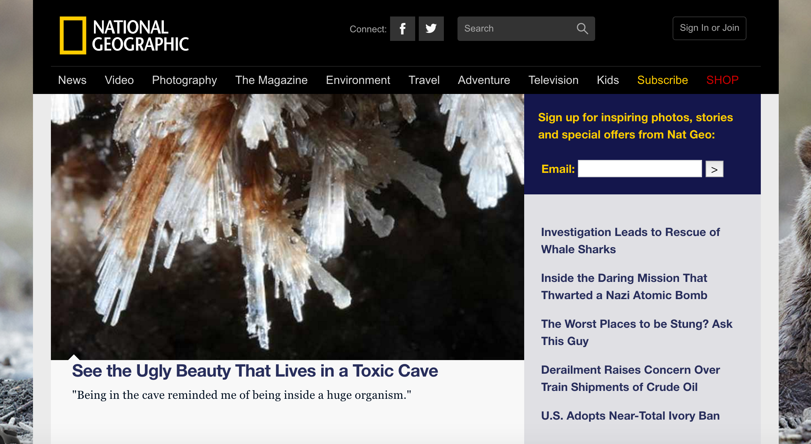
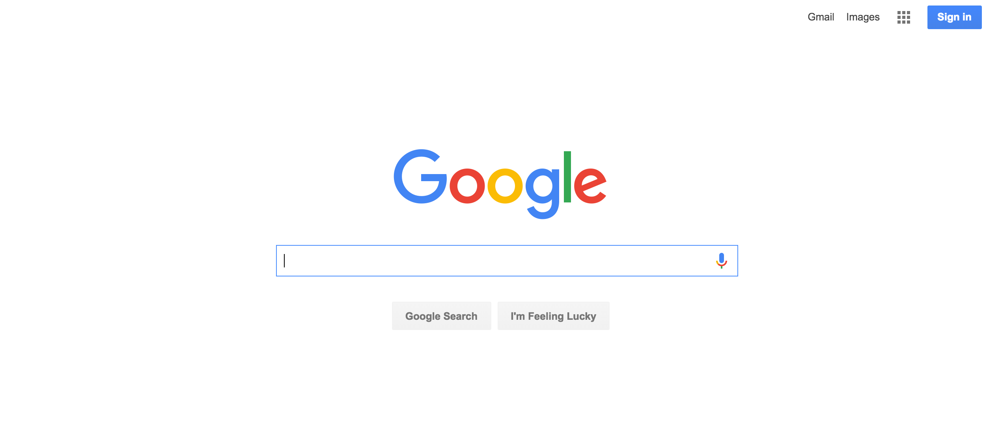

Twitter uses chunking to make it easier for users to access different parts of their navigation. Under each tab in the navigation, users will see a limited number of trending topics. Twitter represents chunking because it combines the information into smaller chunks for easier navigation.
Apple represents Ockham Razor because its site features a simple design that is very functional. The sites layout guides the eye of the user by utilizing a simple font and limited color choices.
Rolling Stone magazine's site is divided into thirds which makes it easier for users to see a variety of current events at one time.
National Geographic represents the Golden ratio because the layout is shown in two rectangular shapes. The first one draws the eye of the reader because it is larger and feature more prominent text and large images. The other rectangle is on the right side of the screen and it features less dominate text and no images. The overall size of the site represents the 0.618/1.618 ratio.
Google's has a very simple design. Simplicity is very important to the design principle Hick's Law. Google does a great job of representing Hick's Law because of its simple white background and its use of primary colors to spell out its name. Google is easy to navigate and features a limited number of options.
